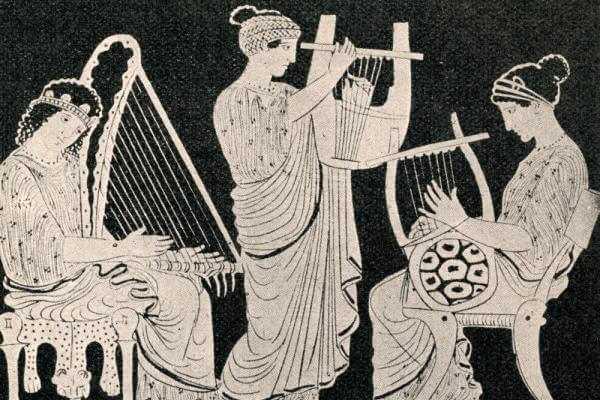
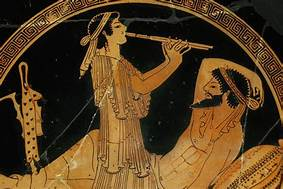
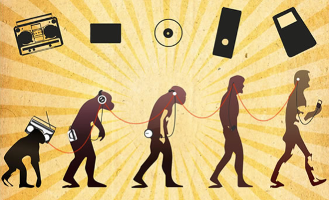

Corriente musical que casa principalmente la música producida o basada en las tradiciones. .
Go somewhereEs un género musical surgido en los años 1920 en las regiones rurales del Sur de Estados Unidos.
Go somewhereEs un estilo de música electrónica de baile que se originó en la ciudad de Chicago, Estados Unidos, hacia 1981.
Go somewhereEs un género musical que se deriva del reggae en español y del dancehall, así como elementos hip hop y latina.
Go somewhereConcepto
La música (del griego: μουσική [τέχνη] - mousikē [téchnē], «el arte de las musas») es, según la definición tradicional del término, el arte de crear y organizar sonidos y silencios respetando los principios fundamentales de la melodía, la armonía y el ritmo, mediante la intervención de complejos procesos psicoanímicos. El concepto de música ha ido evolucionando desde su origen en la Antigua Grecia, en que se reunía sin distinción a la poesía, la música y la danza como arte unitario. Desde hace varias décadas se ha vuelto más compleja la definición de qué es y qué no es la música, ya que destacados compositores en el marco de diversas experiencias artísticas fronterizas han realizado obras que, si bien podrían considerarse musicales, expanden los límites de la definición de este arte. La música, como toda manifestación artística, es un producto cultural con múltiples finalidades, entre otras, la de suscitar una experiencia estética en el oyente, la de expresar sentimientos, emociones, circunstancias, pensamientos o ideas, y cada vez más, cumplir una importante función terapéutica a través de la musicoterapia.
 La música cumple una función de vital importancia en el desarrollo cognitivo del ser humano. Está relacionada con el pensamiento lógico matemático, la adquisición del lenguaje, el desarrollo psicomotriz, las relaciones interpersonales, el aprendizaje de lenguas no nativas y a potenciar la inteligencia emocional, entre otros. Por este motivo, la música debe estar presente en cualquier plan educativo moderno y ser reconocida como una disciplina imprescindible dentro de la enseñanza obligatoria. La música es un estímulo sonoro que afecta al campo perceptivo del individuo; así, el flujo sonoro puede cumplir variadas funciones (entretenimiento, comunicación, ambientación, diversión, etc.). En muchas culturas, la música es una parte importante del modo de vida de la gente, ya que desempeña un papel fundamental en rituales religiosos, en las ceremonias de rito de paso (por ejemplo, la graduación y el matrimonio), en las actividades sociales (por ejemplo, en el baile) y en las actividades culturales que van desde el canto aficionado en el karaoke hasta tocar en una banda amateur de funk o cantar en un coro comunitario. La gente puede hacer música por afición, como un adolescente que toca el chelo en una orquesta juvenil, o trabajar como músico o cantante profesional.
La música cumple una función de vital importancia en el desarrollo cognitivo del ser humano. Está relacionada con el pensamiento lógico matemático, la adquisición del lenguaje, el desarrollo psicomotriz, las relaciones interpersonales, el aprendizaje de lenguas no nativas y a potenciar la inteligencia emocional, entre otros. Por este motivo, la música debe estar presente en cualquier plan educativo moderno y ser reconocida como una disciplina imprescindible dentro de la enseñanza obligatoria. La música es un estímulo sonoro que afecta al campo perceptivo del individuo; así, el flujo sonoro puede cumplir variadas funciones (entretenimiento, comunicación, ambientación, diversión, etc.). En muchas culturas, la música es una parte importante del modo de vida de la gente, ya que desempeña un papel fundamental en rituales religiosos, en las ceremonias de rito de paso (por ejemplo, la graduación y el matrimonio), en las actividades sociales (por ejemplo, en el baile) y en las actividades culturales que van desde el canto aficionado en el karaoke hasta tocar en una banda amateur de funk o cantar en un coro comunitario. La gente puede hacer música por afición, como un adolescente que toca el chelo en una orquesta juvenil, o trabajar como músico o cantante profesional.
La industria musical incluye a las personas que crean nuevas canciones y piezas musicales (como los cantautores y los compositores), a las personas que interpretan música (que incluyen a los músicos de orquesta, de bandas de jazz y de bandas de rock, a los cantantes y a los directores de orquesta), a las personas que graban música (productores musicales e ingenieros de sonido), a las personas que organizan giras de conciertos y a las personas que venden grabaciones, partituras y partituras a los clientes. Incluso una vez que se ha
Definición
Las definiciones parten desde el seno de las culturas, y así, el sentido de las expresiones musicales se ve afectado por cuestiones psicológicas, sociales, culturales e históricas. De esta forma, surgen múltiples y diversas definiciones que pueden ser válidas en el momento de expresar qué se entiende por música. Ninguna, sin embargo, puede ser considerada como perfecta o absoluta.
Una definición bastante amplia determina que música es sonoridad organizada (según una formulación perceptible, coherente y significativa). Esta definición parte de que en aquello a lo que consensualmente se puede denominar «música» se pueden percibir ciertos patrones del «flujo sonoro» en función de cómo las propiedades del sonido son aprendidas y procesadas por los humanos (hay incluso quienes consideran que también por los animales). La definición que se atribuye a Edgard Varese de música como sonido organizado,3 y también la de la Enciclopedia Británica que en su 15a edición describe que «aunque no haya sonidos que no puedan ser descritos como inherentmente no-musicales, en cada cultura los músicos han tendido a restringir la gama de sonidos que estaban dispuestos a admitir». John Blacking añadió este detalle importante a la definición de Varèse: «la música es sonido organizado humanamente».
Hoy en día es frecuente trabajar con un concepto de música basado en tres atributos esenciales: que utiliza sonidos, que es un producto humano (y en este sentido, artificial) y que predomina la función estética. Si tomáramos en cuenta solo los dos primeros elementos de la definición, nada diferenciaría a la música del lenguaje. En cuanto a la función «estética», se trata de un punto bastante discutible; así, por ejemplo, un «jingle» publicitario no deja de ser música por cumplir una función no estética (tratar de vender una mercancía). Por otra parte, hablar de una función «estética» presupone una idea de la música (y del arte en general) que funciona en forma autónoma, ajena al funcionamiento de la sociedad, tal como la vemos en la teoría del arte del filósofo Immanuel Kant.
Etimología
La palabra «música» deriva del griego μουσική (mousike; «(arte) de las musas») En la mitología griega, las nueve musas eran las diosas que inspiraban la literatura, la ciencia y las artes y eran la fuente del conocimiento plasmado en la poesía, los cantos y los mitos de la cultura griega.
Según el Diccionario etimológico en línea: El término «música» deriva de «musike, de mediados del siglo xiii, del francés antiguo musique (siglo xii) y directamente del latín musica "el arte de la música", que también incluye la poesía (también la fuente del español música, italiano musica, alto alemán antiguo mosica, alemán Musik, holandés muziek, danés musik)». Se deriva del «...griego mousike (techne) "(arte) de las musas", del femenino de mousikos «perteneciente a las musas», de Mousa «Musa».
La ortografía moderna data de la década de 1630. En la Grecia clásica, el término «música» se refiere a cualquier arte en el que las musas presidían, pero especialmente la música y la poesía lírica.
Musicoterapia
La musicoterapia es una disciplina de desarrollo relativamente reciente, que concibe a la música como una herramienta sanadora en determinado tipo de procesos emocionales, psicológicos y afectivos de las personas.
La música puede ser empleada como terapia gracias a que, por medio de un plan de intervención guiado por un profesional, permite al individuo liberar emociones para mejorar su comunicación, integración social y expresión individual.
El origen de la música es desconocido, ya que inicialmente no se utilizaban instrumentos musicales para interpretarla, sino la voz humana, o la percusión corporal, que no dejan huella en el registro arqueológico. Se puede inferir que la música se descubrió en un momento similar a la aparición del lenguaje. El cambio de altura musical en el lenguaje produce un canto, de manera que es probable que en los orígenes apareciera de esta manera.
Además, la distinta emotividad a la hora de expresarse, o una expresión rítmica constituye otra forma de, si no música, sí elementos musicales, como son la interpretación o el ritmo. Es decir, la música nació al prolongar y elevar los sonidos del lenguaje. Esta teoría científica lleva siendo sostenida desde hace mucho tiempo, filósofos y sociólogos como Jean Jacques Rousseau,1 Johann Gottfried Herder o Herbert Spencer fueron algunos de sus mayores defensores.
El concepto de música tiene muchas acepciones, pero la que más se acerca a su significado es la del arte de combinar los sonidos en una sucesión temporal. Es una de las artes más valoradas por la sociedad y es la que más presencia tiene en el desarrollo de nuestra vida diaria.
En el mundo occidental la música tiene sus raíces en la Grecia antigua donde la música aparece como un fenómeno ligado a la necesidad del hombre de comunicar sentimientos y vivencias. La música coral era el elemento básico en la educación de los jóvenes espartanos y era un elemento fundamental dentro de las tragedias griegas.

Prehistoria
La flauta de hueso encontrada en Divje Babe (Eslovenia), con más de 40 000 años de antigüedad. La música prehistórica sólo se puede teorizar sobre la base de los hallazgos de los sitios arqueológicos paleolíticos. A menudo se descubren flautas talladas en huesos en los que se han perforado agujeros laterales; se cree que se soplaban en un extremo como el shakuhachi japonés. Se piensa que la flauta de Divje Babe, tallada en el fémur de un oso de las cavernas, tiene al menos 40 000 años. Se han recuperado instrumentos como la flauta de siete agujeros y varios tipos de instrumentos de cuerda, como el ravanahatha, de los yacimientos arqueológicos de la civilización del valle del Indo.10 La India tiene una de las tradiciones musicales más antiguas del mundo; las referencias a la música clásica india (marga) se encuentran en los Vedas, antiguas escrituras de la tradición hindú.11 La colección más antigua y más grande de instrumentos musicales prehistóricos se encontró en China y data de entre el 7000 y el 6600 a. C.12 El «Himno hurrita a Nikkal», que se encuentra en tablillas de arcilla que se remontan aproximadamente al 1400 a. C., es la obra musical escrita más antigua que se conserva.131.
Antiguo Egipto
Los antiguos egipcios atribuyeron a uno de sus dioses, Thoth, la invención de la música, y Osiris, a su vez, lo utilizó como parte de su esfuerzo por civilizar el mundo. La evidencia material y representativa más antigua de los instrumentos musicales egipcios data del período predinástico, pero la evidencia está atestiguada con mayor seguridad en el Imperio Antiguo cuando se tocaron arpas, flautas y clarinetes dobles.15 Durante el Imperio Medio se agregaron instrumentos de percusión, liras y laúdes a las orquestas. Los platillos16 frecuentemente acompañaban a la música y danza, como lo hacen todavía hoy en Egipto. La música folclórica egipcia, incluidos los rituales tradicionales sufíes dhikr, es el género musical contemporáneo más cercano a la música del antiguo Egipto y han conservado muchas de sus características, ritmos e instrumentos.
Culturas asiática.
Mujeres indias vestidas con atuendos regionales tocando una variedad de instrumentos musicales populares en diferentes partes de la India.
La música clásica india (marga) es una de las tradiciones musicales más antiguas del mundo.19 La civilización del valle del Indo tiene esculturas que muestran danzas20 e instrumentos musicales antiguos, como la flauta de siete agujeros. Se han recuperado varios tipos de instrumentos de cuerda y tambores de Harappa y Mohenjo-Daro mediante excavaciones realizadas por Mortimer Wheeler.21 El Rigveda tiene elementos de la música india actual, con una notación musical para denotar la métrica y el modo de cantar.22 La música clásica india es monofónica y se basa en una sola línea melódica o raga, organizada rítmicamente a través de talas. Silappadhikaram de Ilango Adigal proporciona información sobre cómo se pueden formar nuevas escalas mediante el cambio modal de la tónica de una escala existente.23 La música hindi actual fue influenciada por la música tradicional persa y por los mogoles afganos. La música carnática, popular en los estados del sur, es en gran parte devocional; la mayoría de las canciones están dirigidas a las deidades hindúes. También hay muchas canciones que enfatizan el amor y otros temas sociales.
La música clásica china, el arte tradicional o la música de la corte de China, tiene una historia que se remonta a unos tres mil años. Tiene sus propios sistemas únicos de notación musical, así como afinación y tono musical, instrumentos y estilos musicales o géneros musicales. La música china es pentatónica-diatónica, con una escala de doce notas a una octava (5 + 7 = 12) al igual que la música de influencia.

Desde los discos de vinil a los casetes, CD, reproductores de MP3 y servicios de transmisión, la manera en la que escuchamos música ha evolucionado de manera rápida con el paso de los años.
Conforme más y más gente voltea hacia las conveniencias de la transmisión de música, es fácil olvidar los retos que se enfrentan cuando se busca asegurar que artistas y disqueras son compensados de manera justa.
Todos hablan acerca de la ventaja competitiva que la transformación digital brinda a las compañías. Sin embargo, para las organizaciones de derechos musicales, adopter una cultura digital no es una opción. Es una cuestión de supervivencia.
Esta es la situación que enfrenta la Agencia Canadiense de Derechos de Reproducción Musical (CMRRA, por sus siglas en inglés), una organización de licenciamiento musical la cual representa a la mayoría de las disqueras y dueños de derechos musicales en Canadá.
En 2011, la CMRRA junto con el resto de la industria de derechos musicales, enfrentaron drásticos cambios a su modelo de negocio. Los servicios de transmisión y reproducción en línea como Spotify y Apple Music incrementaron de manera importante el número de transacciones de cientos a miles a millones, mientras que las ganancias por transacción disminuyeron a pequeñas fracciones de un centavo.
En este nuevo mundo donde lo digital es primero, un archivo que contiene cientos de millones de transacciones puede generar pagos por regalías de 100 mil libras. En comparación, en el mundo previo a lo digital, esto hubiera generado en su lugar, millones de euros.
Para ayudar a su transformación, CMRRA requería una solución robusta y segura que pudiera ayudar con el creciente número de transacciones de una manera rentable, a la vez que le permitiera continuar con la distribución de regalías a artistas y otros poseedores de derechos. La compañía comenzó este camino cuando buscó a Spanish Point, un Microsoft Gold Partner en Irlanda.

© 2021 Wordmusic.com |Todos los derechos reservados